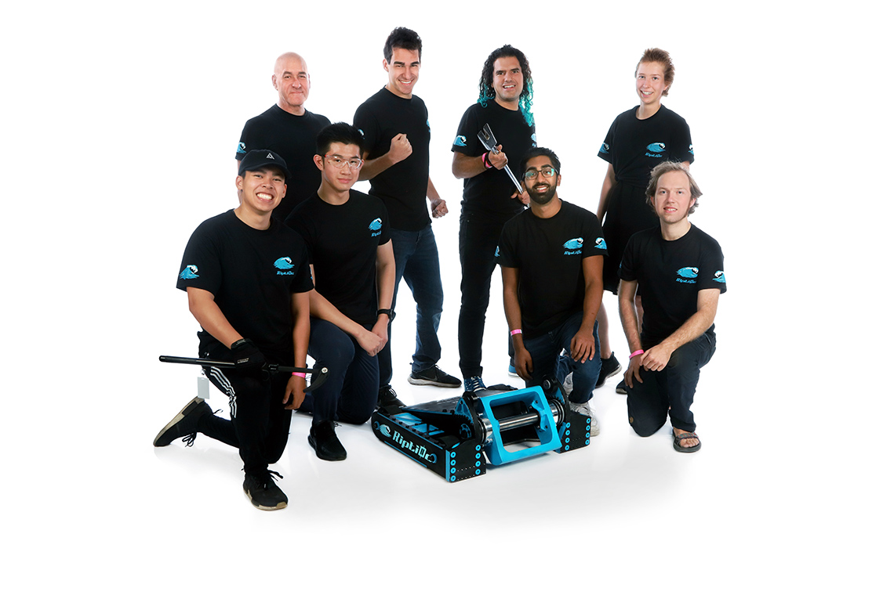

My Portfolio

BattleBots
- Drafted electrical diagrams, designed custom sensor PCBs using Altium, and developed brushless motor control software (C++) under the open-source VESC project.
- Lead Team Riptide as the chief of electronics and embedded systems during the 2021 and 2022 seasons of Discovery Channel’s TV Show Battlebots.
- Placed within the Top 8 of all heavyweight combat robots worldwide, awarded “Rookie of the Year” for unprecedented success in first ever competitive season.
Texas A&M Robomasters
- Drafted electrical diagrams, designed custom sensor PCBs using Altium, and developed brushless motor control software (C++) under the open-source VESC project.
- Lead Team Riptide as the chief of electronics and embedded systems during the 2021 and 2022 seasons of Discovery Channel’s TV Show Battlebots.
- Placed within the Top 8 of all heavyweight combat robots worldwide, awarded “Rookie of the Year” for unprecedented success in first ever competitive season.